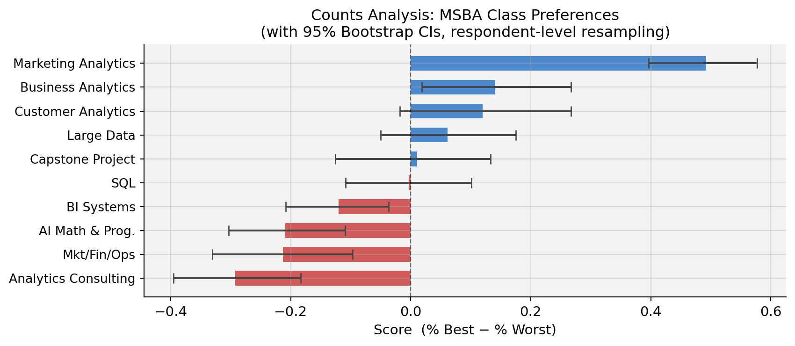
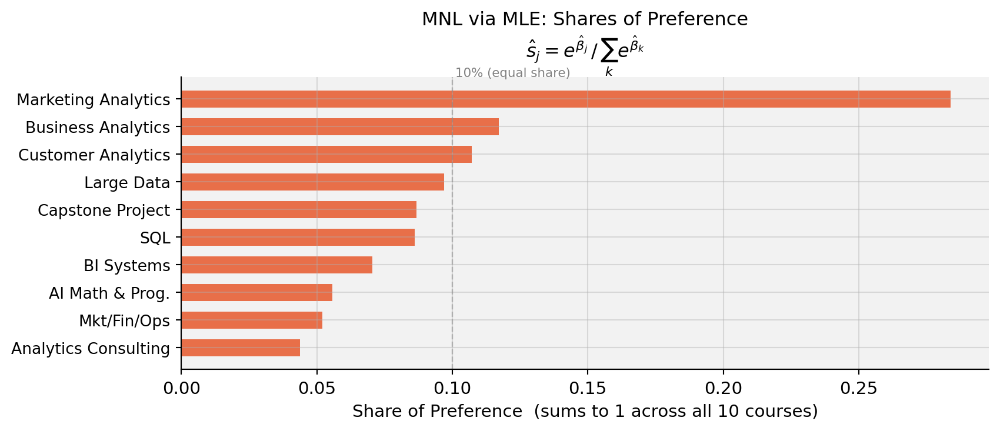
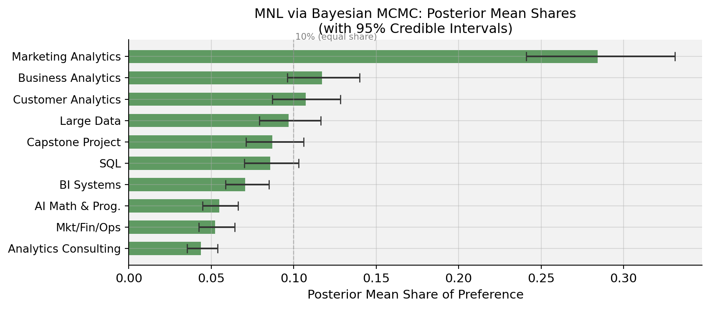
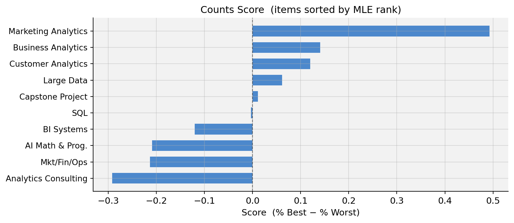
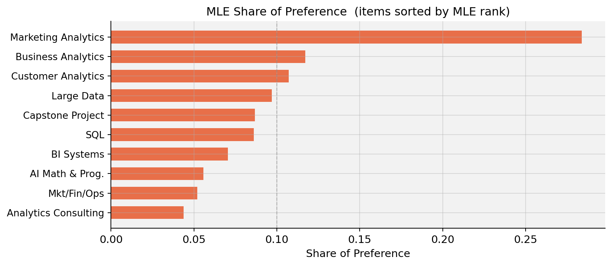
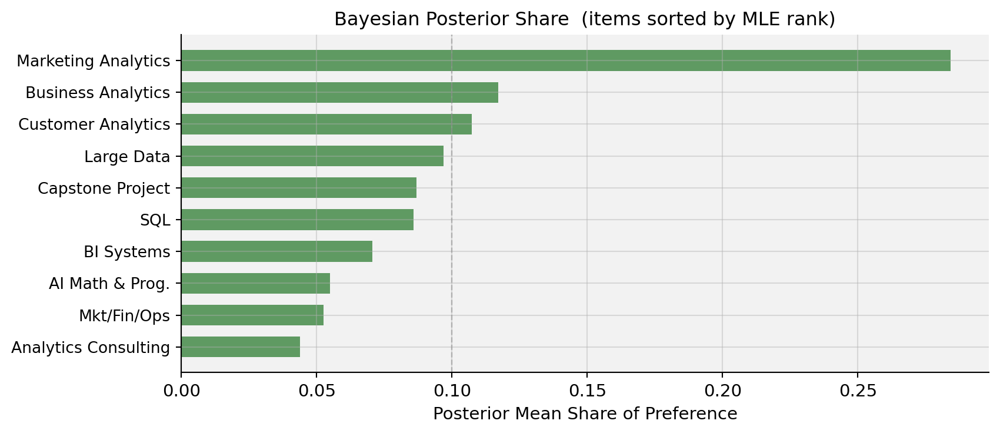

Counts, MLE, and Bayesian Estimation of the Multinomial Logit Model
statistics
MLE
Bayesian
MaxDiff
MNL
Author
Eric Zhao
Published
May 28, 2026
Introduction
MaxDiff (also called Best-Worst Scaling) is a survey methodology for measuring how strongly people prefer one item over another. On each screen, the respondent sees a small subset of items and selects both the most-preferred and the least-preferred. This design forces genuine trade-offs and sidesteps the scale-use bias endemic to rating questions — humans are far better at comparing two options than at assigning calibrated numeric scores.
In this study, 85 MSBA students at UC San Diego Rady School of Management responded to a MaxDiff survey over the 10 core MSBA courses. On each of 8 screens, they saw 4 courses and chose the one they most preferred and the one they least preferred. Three estimation methods are applied and compared:
Counts analysis — % times each class was picked best minus % times picked worst
Multinomial Logit (MNL) via Maximum Likelihood — a probabilistic choice model with classical standard errors
MNL via Bayesian Estimation — the same model fit with Metropolis-Hastings MCMC, yielding full posteriors on all quantities
All three should agree on the broad ranking; they differ in statistical rigor, how uncertainty is communicated, and what extensions they naturally support.
Number of respondents (N): 85
Tasks per respondent (T): 8
Items per task (J): 4
Total items in study: 10
Code
# Sanity check: every task has exactly 1 best, 1 worst, 2 neutraltask_checks = df4.groupby(['record_id', 'task'])['response'].agg( n_best=lambda x: (x ==1).sum(), n_worst=lambda x: (x ==-1).sum(),)assert (task_checks['n_best'] ==1).all(), "Some task lacks exactly 1 best pick"assert (task_checks['n_worst'] ==1).all(), "Some task lacks exactly 1 worst pick"print("Sanity check passed: every task has exactly 1 best and 1 worst pick.")# Exposure countsexposure = df4.groupby('item').size().reset_index(name='times_shown')exposure['label'] = exposure['item'].map(short_labels)tbl_exp = exposure[['item', 'label', 'times_shown']].rename( columns={'item': 'Item', 'label': 'Label', 'times_shown': 'Times Shown'})print(f"Exposure counts — mean = {exposure['times_shown'].mean():.0f} (should be roughly equal):")display(style_table(tbl_exp, 'Exposure Counts per Course') .set_properties(subset=['Label'], **{'text-align': 'left'}))
Sanity check passed: every task has exactly 1 best and 1 worst pick.
Exposure counts — mean = 272 (should be roughly equal):
Table 1: Exposure Counts per Course
Item
Label
Times Shown
0
1
AI Math & Prog.
273
1
2
SQL
274
2
3
Mkt/Fin/Ops
272
3
4
Large Data
276
4
5
Business Analytics
270
5
6
Analytics Consulting
267
6
7
Customer Analytics
276
7
8
Capstone Project
272
8
9
Marketing Analytics
274
9
10
BI Systems
266
The survey has a balanced design: each of the 10 courses appears roughly the same number of times across all tasks, ensuring no course gets more “airtime” than another.
Counts Analysis
For each course \(j\), the counts score is the fraction of times it was picked best minus the fraction of times it was picked worst (both relative to how often it was shown):
Table 2: Table 1 — Counts Analysis: Times Shown, Best/Worst Picks, and Score
Item
Label
Shown
Best
Worst
% Best
% Worst
Score
0
9
Marketing Analytics
274
147
12
53.6%
4.4%
+0.493
1
5
Business Analytics
270
93
55
34.4%
20.4%
+0.141
2
7
Customer Analytics
276
104
71
37.7%
25.7%
+0.120
3
4
Large Data
276
77
60
27.9%
21.7%
+0.062
4
8
Capstone Project
272
72
69
26.5%
25.4%
+0.011
5
2
SQL
274
55
56
20.1%
20.4%
-0.004
6
10
BI Systems
266
23
55
8.6%
20.7%
-0.120
7
1
AI Math & Prog.
273
33
90
12.1%
33.0%
-0.209
8
3
Mkt/Fin/Ops
272
43
101
15.8%
37.1%
-0.213
9
6
Analytics Consulting
267
33
111
12.4%
41.6%
-0.292
Code
# Bar chart with bootstrap CIsfig, ax = plt.subplots(figsize=(9, 4))colors = ['#1565C0'if s >0else'#C62828'for s in item_stats['score']]y_pos =range(len(item_stats))xerr = [item_stats['score'].values - item_stats['ci_lo'].values, item_stats['ci_hi'].values - item_stats['score'].values]ax.barh(y_pos, item_stats['score'], xerr=xerr, color=colors, alpha=0.75, ecolor='#444', capsize=4, height=0.62)ax.set_yticks(y_pos)ax.set_yticklabels(item_stats['label'], fontsize=10)ax.axvline(0, color='black', linewidth=0.9, linestyle='--', alpha=0.5)ax.set_xlabel('Score (% Best − % Worst)', fontsize=11)ax.set_title('Counts Analysis: MSBA Class Preferences\n''(with 95% Bootstrap CIs, respondent-level resampling)', fontsize=12)ax.invert_yaxis()plt.tight_layout()plt.show()

Findings. Marketing Analytics (MGTA 495) dominates by a wide margin — students picked it best far more often than any other course. Business Analytics and Customer Analytics form a solid second tier with clearly positive scores, while Large Data and Capstone hover near zero. SQL is just barely negative (−0.004), indistinguishable from neutral. At the bottom, Analytics Consulting and Mkt/Fin/Ops are consistently chosen as least preferred. The wide confidence intervals in the middle of the ranking warn against over-interpreting adjacent ranks there.
From MaxDiff Data to MNL Choices
The Multinomial Logit (MNL) model treats each survey screen as a discrete choice. Assign each course \(j\) a scalar utility \(\beta_j\). On a screen showing items \(\{a, b, c, d\}\), the probability that course \(b\) is picked best is the standard softmax:
After the best is removed, the probability that course \(c\) is picked worst from the remaining three — using negated utilities — is:
\[
P(\text{worst} = c \mid \text{best} = b) = \frac{e^{-\beta_c}}{e^{-\beta_a} + e^{-\beta_c} + e^{-\beta_d}}
\]
Negating utilities is the key: a course with high \(\beta\) is unlikely to be picked worst (exp(−large) ≈ 0), which is exactly what we want.
Each task therefore contributes two MNL observations — the best-pick and the worst-pick — doubling the information extracted from each screen.
Identifiability. The softmax is invariant to adding a constant to all \(\beta\)’s, so only \(K - 1 = 9\) parameters are identified. We fix \(\beta_1 = 0\) (AI Math & Prog. as the reference category) and estimate \(\beta_2, \ldots, \beta_{10}\).
Code
# Reshape data: one row per task, recording the 4 shown items, best, worsttasks_list = []for (rid, t), g in df4.groupby(['record_id', 'task']): items = g.sort_values('position')['item_idx'].values.astype(int) best =int(g.loc[g['response'] ==1, 'item_idx'].values[0]) worst =int(g.loc[g['response'] ==-1, 'item_idx'].values[0]) tasks_list.append((items, best, worst))n_tasks =len(tasks_list)shown_arr = np.array([t[0] for t in tasks_list], dtype=int) # (680, 4)best_arr = np.array([t[1] for t in tasks_list], dtype=int) # (680,)worst_arr = np.array([t[2] for t in tasks_list], dtype=int) # (680,)print(f"Tasks: {n_tasks} → {2* n_tasks} MNL choice observations total")
Tasks: 680 → 1360 MNL choice observations total
MNL via Maximum Likelihood
The log-likelihood sums the best-pick and worst-pick log-probabilities over all \(N \times T = 680\) tasks:
where \(\mathcal{S}\) is the set of shown items, \(j^*_b\) is the best pick, and \(j^*_w\) is the worst pick. The logsumexp trick ensures numerical stability.
Code
def log_lik(beta9):"""Log-likelihood of best+worst MaxDiff choices. beta9: length-9 vector (beta_2..beta_10).""" beta = np.r_[0.0, beta9] # full 10-vector; beta_1 pinned to 0 shown_betas = beta[shown_arr] # (n_tasks, 4)# --- best pick --- best_betas = beta[best_arr] # (n_tasks,) ll_best = best_betas - logsumexp(shown_betas, axis=1)# --- worst pick: exclude best item from denominator --- neg_shown =-shown_betas.copy() neg_shown[shown_arr == best_arr[:, None]] =-np.inf # mask the best item out worst_betas = beta[worst_arr] ll_worst =-worst_betas - logsumexp(neg_shown, axis=1)return np.sum(ll_best) + np.sum(ll_worst)# Maximize log-likelihood via L-BFGS-Bresult = minimize(lambda b: -log_lik(b), x0=np.zeros(9), method='L-BFGS-B', options={'maxiter': 500, 'ftol': 1e-12, 'gtol': 1e-7})beta_mle9 = result.xbeta_mle = np.r_[0.0, beta_mle9]print(f"Optimization converged: {result.success}")print(f"Log-likelihood at MLE: {-result.fun:.2f}")
Optimization converged: True
Log-likelihood at MLE: -1572.73
Code
# Standard errors from numerical Hessian of the negative log-likelihooddef num_hessian(f, x, h=1e-4): n =len(x) H = np.zeros((n, n))for i inrange(n):for j inrange(i, n): xpp = x.copy(); xpp[i] += h; xpp[j] += h xpm = x.copy(); xpm[i] += h; xpm[j] -= h xmp = x.copy(); xmp[i] -= h; xmp[j] += h xmm = x.copy(); xmm[i] -= h; xmm[j] -= h H[i, j] = (f(xpp) - f(xpm) - f(xmp) + f(xmm)) / (4* h**2) H[j, i] = H[i, j]return HH = num_hessian(lambda b: -log_lik(b), beta_mle9)cov = np.linalg.inv(H)se9 = np.sqrt(np.diag(cov))se_full = np.r_[0.0, se9] # SE for item 1 is 0 (reference)# Shares of preference: softmax of all 10 betasshares_mle = np.exp(beta_mle) / np.exp(beta_mle).sum()# Results tablemle_df = pd.DataFrame({'item': np.arange(1, 11),'label': [short_labels[i] for i inrange(1, 11)],'beta': beta_mle,'se': se_full,'share': shares_mle,})mle_df = mle_df.sort_values('share', ascending=False).reset_index(drop=True)tbl = mle_df.copy()tbl['beta'] = tbl['beta'].map('{:+.3f}'.format)tbl['se'] = tbl['se'].map('{:.3f}'.format)tbl['share'] = tbl['share'].map('{:.4f}'.format)tbl_display = tbl[['item', 'label', 'beta', 'se', 'share']].rename( columns={'item': 'Item', 'label': 'Label', 'beta': 'β̂', 'se': 'SE', 'share': 'Share'})display(style_table(tbl_display, 'Table 2 — MLE Estimates: β̂, Standard Errors, and Shares of Preference') .set_properties(subset=['Label'], **{'text-align': 'left'}))
Table 3: Table 2 — MLE Estimates: β̂, Standard Errors, and Shares of Preference
Item
Label
β̂
SE
Share
0
9
Marketing Analytics
+1.630
0.146
0.2839
1
5
Business Analytics
+0.744
0.142
0.1171
2
7
Customer Analytics
+0.656
0.142
0.1072
3
4
Large Data
+0.555
0.140
0.0969
4
8
Capstone Project
+0.443
0.140
0.0867
5
2
SQL
+0.438
0.137
0.0862
6
10
BI Systems
+0.236
0.137
0.0704
7
1
AI Math & Prog.
+0.000
0.000
0.0556
8
3
Mkt/Fin/Ops
-0.067
0.139
0.0520
9
6
Analytics Consulting
-0.239
0.141
0.0438
Code
# MLE bar chart — shares of preferencefig, ax = plt.subplots(figsize=(9, 4))y_pos =range(len(mle_df))ax.barh(y_pos, mle_df['share'], color='#E64A19', alpha=0.78, height=0.62)ax.set_yticks(y_pos)ax.set_yticklabels(mle_df['label'], fontsize=10)ax.set_xlabel('Share of Preference (sums to 1 across all 10 courses)', fontsize=11)ax.set_title('MNL via MLE: Shares of Preference\n'r'$\hat{s}_j = e^{\hat\beta_j}\,/\,\sum_k e^{\hat\beta_k}$', fontsize=12)ax.axvline(0.1, color='gray', linestyle='--', alpha=0.45, linewidth=0.9)ax.text(0.101, -0.8, '10% (equal share)', color='gray', fontsize=8)ax.invert_yaxis()plt.tight_layout()plt.show()

Shares of preference answer a concrete question: if all 10 courses were on a single screen, what fraction of choices would each one attract? With equal preferences the answer would be 10% each; Marketing Analytics captures roughly 28% — nearly three times its equal share.
Counts vs. MLE ranking. The two methods produce nearly identical rankings. The MNL’s main edge is statistical: every item shown but not picked supplies information about its utility, and the choice context (which items it competed against) is explicitly modeled. In counts analysis, a course that always appeared alongside very disliked options would earn an artificially high score. MNL corrects for this.
MNL via Bayesian Estimation
Bayesian inference targets the full posterior rather than a single point estimate:
We use a weakly informative prior \(\boldsymbol\beta \sim \mathcal{N}(\mathbf{0},\; 10\cdot\mathbf{I})\) — a standard deviation of ≈ 3.2 per coefficient is diffuse enough to not pull estimates toward zero in any meaningful way. The posterior is sampled via a random-walk Metropolis-Hastings algorithm.
Step-size tuning. We want an acceptance rate of roughly 25–40%; too low means proposals are rejected almost always (the chain gets stuck), too high means steps are tiny and the chain explores slowly.
Code
# Pilot runs to tune the step sizeprint("Acceptance rates by step size (2,000 pilot iterations each):")for step in [0.05, 0.06, 0.07, 0.08, 0.10]: _, ar = mh_sampler(beta_mle9, 2_000, step, seed=99) flag =" ← chosen"if step ==0.07else""print(f" step = {step:.2f} acceptance rate = {ar:.1%}{flag}")
The chains show the classic “fuzzy caterpillar” pattern — rapid oscillation around a stable mean with no visible drift — confirming good mixing and convergence after burn-in.
# Bayesian bar chart with 95% credible intervals on sharesfig, ax = plt.subplots(figsize=(9, 4))y_pos =range(len(bayes_df))xerr = [bayes_df['share'].values - bayes_df['share_lo'].values, bayes_df['share_hi'].values - bayes_df['share'].values]ax.barh(y_pos, bayes_df['share'], xerr=xerr, color='#2E7D32', alpha=0.75, ecolor='#333', capsize=4, height=0.62)ax.set_yticks(y_pos)ax.set_yticklabels(bayes_df['label'], fontsize=10)ax.set_xlabel('Posterior Mean Share of Preference', fontsize=11)ax.set_title('MNL via Bayesian MCMC: Posterior Mean Shares\n''(with 95% Credible Intervals)', fontsize=12)ax.axvline(0.1, color='gray', linestyle='--', alpha=0.45, linewidth=0.9)ax.text(0.101, -0.8, '10% (equal share)', color='gray', fontsize=8)ax.invert_yaxis()plt.tight_layout()plt.show()

MLE vs. Bayes. Posterior means and MLE point estimates are nearly identical — the weakly informative prior barely moves the estimates when 680 tasks are available. Posterior standard deviations are close to MLE standard errors, as expected. The key advantage is that credible intervals on derived quantities like shares of preference fall out directly from the MCMC draws, with no delta-method algebra.
_d = item_stats.set_index('item').reindex(mle_order).reset_index()fig, ax = plt.subplots(figsize=(9, 4))ax.barh(range(10), _d['score'], color='#1565C0', alpha=0.75, height=0.65)ax.set_yticks(range(10))ax.set_yticklabels([short_labels[i] for i in mle_order], fontsize=10)ax.axvline(0, color='black', linewidth=0.9, linestyle='--', alpha=0.5)ax.set_xlabel('Score (% Best − % Worst)', fontsize=11)ax.set_title('Counts Score (items sorted by MLE rank)', fontsize=12)ax.invert_yaxis()plt.tight_layout()plt.show()

Code
_d = mle_df.set_index('item').reindex(mle_order).reset_index()fig, ax = plt.subplots(figsize=(9, 4))ax.barh(range(10), _d['share'], color='#E64A19', alpha=0.78, height=0.65)ax.set_yticks(range(10))ax.set_yticklabels([short_labels[i] for i in mle_order], fontsize=10)ax.axvline(0.1, color='gray', linestyle='--', alpha=0.45, linewidth=0.9)ax.set_xlabel('Share of Preference', fontsize=11)ax.set_title('MLE Share of Preference (items sorted by MLE rank)', fontsize=12)ax.invert_yaxis()plt.tight_layout()plt.show()

Code
_d = comp.set_index('item').reindex(mle_order).reset_index()fig, ax = plt.subplots(figsize=(9, 4))ax.barh(range(10), _d['bayes_share'], color='#2E7D32', alpha=0.75, height=0.65)ax.set_yticks(range(10))ax.set_yticklabels([short_labels[i] for i in mle_order], fontsize=10)ax.axvline(0.1, color='gray', linestyle='--', alpha=0.45, linewidth=0.9)ax.set_xlabel('Posterior Mean Share of Preference', fontsize=11)ax.set_title('Bayesian Posterior Share (items sorted by MLE rank)', fontsize=12)ax.invert_yaxis()plt.tight_layout()plt.show()

Where they agree. All three methods agree perfectly at the top and bottom: Marketing Analytics is the clear winner; Analytics Consulting sits firmly last, followed by Mkt/Fin/Ops and AI Math & Prog. The top-3 and bottom-3 courses are stable across all methods.
Where they disagree. Ranks 4–7 (Large Data, Customer Analytics, SQL, Capstone) shuffle modestly between methods. Counts analysis and MNL diverge most here: the MNL reweights evidence by what competitors were on the same screen, which can reverse adjacent ranks when items have nearly equal utilities.
What MNL adds over counts. The choice model extracts information from every item on a screen, not just the one picked. If a mediocre course consistently appeared alongside weak competitors, its counts score would look inflated. The MNL adjusts for the choice context and produces statistically more efficient estimates — especially in the dense middle of the ranking.
What Bayes adds over MLE. Full posterior distributions on all quantities. The credible intervals on shares of preference shown above required no delta-method computation — just pushing each MCMC draw through the softmax and taking quantiles. Bayes also extends naturally to hierarchical models that estimate individual-level\(\beta_i\) vectors, revealing preference heterogeneity across students.
Discussion
Substantive finding. MSBA students strongly prefer Marketing Analytics (MGTA 495) — it earns nearly three times its “equal-share” allocation and is the only course approaching a counts score of +0.5 (actual: +0.493). Business Analytics (MGTA 453) and Customer Analytics (MGTA 455) round out the top tier, reflecting an appreciation for applied, data-driven coursework with clear career relevance. At the bottom, Analytics Consulting (MGTA 444) ranks last in every method, followed by Mkt/Fin/Ops and AI Math & Prog., perhaps because students perceive these as less specialized or less directly applicable to their target roles.
Methodological lessons.
Counts: transparent and fast. Ideal for an executive dashboard or an early-stage sanity check. It ignores the choice context and conveys no formal uncertainty.
MLE MNL: statistically rigorous point estimates with classical standard errors. The right tool when you need a single defensible number with a confidence interval.
Bayesian MNL: full posteriors on any derived quantity. Particularly valuable when (a) uncertainty on shares of preference matters, (b) you want to propagate uncertainty into market simulations (“what if we added a new elective?”), or (c) you plan to extend the model to a hierarchical structure that captures individual-level heterogeneity.
Caveats. The sample is self-selected MSBA students at UCSD Rady — preferences reflect this specific cohort’s background, career aspirations, and program experiences and need not generalize. Prior coursework, current program term, the instructor teaching the course, and even item presentation order may all influence responses.
Next steps. The natural extension is a hierarchical (mixed) MNL that estimates a distribution over individual-level \(\boldsymbol\beta_i\) vectors, revealing which student subgroups prefer which courses. This would let program advisors tailor recommendations by track, cohort, or stated career goal — and help the curriculum team identify which courses have niche versus broad appeal.